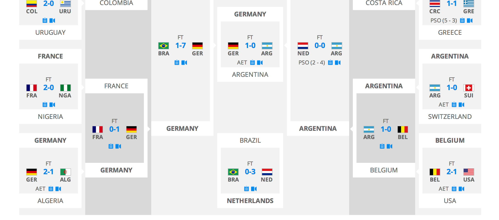

D3 represents "Data-Driven Documents"
git clone https://gist.github.com/dab8f470f7628ecf606a.git
(or git clone git@gist.github.com/dab8f470f7628ecf606a.git)
cd dab8f470f7628ecf606a
git add thumbnail.png
git commit -m "Add thumbnail"
git push
SVG is short for Scalable Vector Graphics
The origin of the viewport is at the top/left with x-axis pointing to the right and y-axis pointing down
'svg''g''defs''rect', 'circle', 'ellipse', 'line', 'polyline', 'polygon''text''path'
<svg width="500" height="200">
<g id="group1" fill="green">
<rect x="50" y="50" width="200" height="20"/>
<circle cx="350" cy="60" r="50"/>
</g>
<defs>
<linearGradient id="Gradient01">
<stop offset="20%" stop-color="#39F" />
<stop offset="90%" stop-color="#F3F" />
</linearGradient>
</defs>
<rect x="50" y="100" width="300" height="20" fill="url(#Gradient01)" />
<rect x="50" y="150" width="300" height="20"
fill="none" stroke="pink" stroke-width="5px"/>
</svg>
A path is defined by including a ‘path’ element which contains a d="(path data)" attribute, where the ‘d’ attribute contains the moveto, line, curve (both cubic and quadratic Béziers), arc and closepath instructions.
<svg width="190px" height="160px">
<path d="M10 80 C 40 10, 65 10, 95 80 S 150 150, 180 80" stroke="purple"
stroke-width="3" fill="transparent"/>
</svg>
'fill','opacity','stroke','stroke-width', 'shape-rendering', etc
transform="translate(150,100)"
transform="scale(2)"
transform="rotate(90)"
date,movie,budget,domestic,world
12/18/2008,Avatar,425000000,760507625,2783918982
5/24/2007,Pirates of the Caribbean: At World's End,300000000,309420425,960996492
7/20/2012,The Dark Knight Rises,275000000,448139099,1079343943
3/9/2012,John Carter,275000000,73058679,282778100
7/2/2013,The Lone Ranger,275000000,89289910,259989910
11/24/2010,Tangled,260000000,200821936,586581936
5/4/2007,Spider-Man 3,258000000,336530303,890875303
12/13/2013,The Hobbit: The Desolation of Smaug,250000000,258366855,950466855
5/20/2011,Pirates of the Caribbean: On Stranger Tides,250000000,241063875,1043663875
7/15/2009,Harry Potter and the Half-Blood Prince,250000000,301959197,934416487
12/14/2012,The Hobbit: An Unexpected Journey,250000000,303003568,1014703568
6/28/2006,Superman Returns,232000000,200120000,390874000
11/14/2008,Quantum of Solace,230000000,169368427,591692078
6/14/2013,Man of Steel,225000000,291045518,667999518
7/7/2006,Pirates of the Caribbean: Dead Man's Chest,225000000,423315812,1060615812
5/16/2008,The Chronicles of Narnia: Prince Caspian,225000000,141621490,419490286
5/4/2012,Marvel's The Avengers,225000000,623279547,1514279547
7/3/2012,The Amazing Spider-Man,220000000,262030663,757890267
5/25/2012,Men in Black 3,215000000,179020854,624821154
6/24/2009,Transformers: Revenge of the Fallen,210000000,402111870,836519699
var margin = {top: 50, right: 80, bottom: 30, left: 40},
width = 960-margin.left -margin.right,
height = 500 - margin.top - margin.bottom;
var svg = d3.select("body").append("svg")
.attr("width", width + margin.left + margin.right)
.attr("height", height + margin.top + margin.bottom)
.append("g")
.attr("transform", "translate(" + margin.left + "," + margin.top + ")");
var x = d3.time.scale().range([0, width]),
y = d3.scale.linear().range([height, 0]),
c = d3.scale.category20(),
r = d3.scale.linear().range([5,50]),
xAxis = d3.svg.axis().scale(x).tickSize(3),
yAxis = d3.svg.axis().scale(y).ticks(4).orient("right");
var formatDate = d3.time.format("%m/%d/%Y");
d3.csv("movies.csv", function(data) {
data.forEach(function(d){
d.date=formatDate.parse(d.date);
d.budget = +d.budget;
d.domestic = +d.domestic;
d.world = +d.world;
});
...
}
var minBudget = d3.min(data, function( d ) { return d.budget; }),
maxBudget = d3.max(data, function(d){ return d.budget;}),
minDomestic = d3.min(data, function(d){ return d.domestic;}),
maxDomestic = d3.max(data, function(d){ return d.domestic;}),
minWorld = d3.min(data, function(d){ return d.world;}),
maxWorld = d3.max(data, function(d){ return d.world;});
x.domain([mindate, maxdate]);
y.domain([minBudget*0.9, maxBudget*1.2]).nice;
r.domain([minDomestic,minWorld, maxWorld)]);
.label {
font: 10px sans-serif;
fill: steelblue;
}
.axis text {
font: 10px sans-serif;
}
.axis line,
.axis path {
fill: none;
stroke: #000;
shape-rendering: crispEdges;
}
.bubble {
fill-opacity: .5;
stroke: #fff;
stroke-width: .5px;
}
.bubble :hover {
stroke: #000;
}
var elemEnter = svg.append("g")
.selectAll("circle").data(data).enter();
elemEnter.append("circle")
.attr("class", "bubble")
.attr("cx", function(d){ return x(d.date); })
.attr("cy", function(d){ return y(d.budget); })
.attr("r", function(d){ return r(d.domestic);})
.style("fill", function(d){ return c(d.domestic);});
elemEnter.append("text")
.attr("class", "label")
.attr("x", function(d){ return x(d.date)-5;})
.attr("y", function(d){ return y(d.budget)-10;})
.attr("text-anchor", "start")
.text(function(d){return d.movie;});
svg.append("g")
.attr("class", "x axis")
.attr("transform", "translate(0," + height + ")")
.call(xAxis);
svg.append("g")
.attr("class", "y axis")
.attr("transform", "translate(" + width + ",0)")
.call(yAxis);
svg.selectAll("circle").data(movies_data).transition().ease("linear")
.attr("r", function(d){ return r(d.world);})
.style("fill", function(d){ return c(d.world);})
select selects the first elementselectAll selects all elementsappend appends new elements and returns a new selection containing the appended elementsselection.data() joins the array data with current selectionSelection.enter() returns the placeholder nodes for each data element that hasn't been added to the current selection. The enter selection merges into the update selection when you append or insertselection.exit() returns the exiting selection - the existing DOM elements in the current selection that no new data element was not found. Exit only returns a reference to the exiting selection, does not remove itselection.remove() removes the selected elementselection.transition creates animation when changing DOM elementsdelay, duration and ease for simple transitionsdelay to create animation based on data or indextransition.attr(name,value) transitions the value of the attribute to the specified value. The starting value is the current value. Built-in interpolators are automatically selected based on ending valuetransition.style(name,value) transitions the value of the CSS property to the specified value
attrTween and styleTweenrect is used for bar chartsarc is used for pie charts and donut chartsline and path are used for line chartscircle is often used in different charts
var parent = {"children": […]},
child = {"value": …};
2014 World Cup Matches

{
"nodes":[
{"name":"Germany", "group":"Final"},
{"name":"Argentina", "group":"Final"},
{"name":"Brazil","group":"Playoff for third-place"},
{"name":"Neitherlands","group":"Playoff for third-place"},
{"name":"Costa Rica", "group":"Semifinal"},
{"name":"Belgium", "group":"Semifinal"},
{"name":"France","group": "Semifinal"},
{"name":"Colombia","group": "Quarter finals"},
{"name":"Switzerland","group":"Quarter finals"},
{"name":"USA","group":"Quarter finals"},
{"name":"Nigeria","group":"Quarter finals"},
{"name":"Algeria","group":"Quarter finals"},
{"name":"Mexico","group":"Quarter finals"},
{"name":"Greece","group":"Quarter finals"},
{"name":"Chile","group":"Quarter finals"},
{"name":"Uraguay","group":"Quarter finals"},
{"name":"Portugal","group":"Quarter finals"},
{"name":"Ghana","group":"Quarter finals"},
{"name":"Korea Republic","group":"Round of 16"},
{"name":"Russia","group":"Round of 16"},
{"name":"Nigeria","group":"Round of 16"},
{"name":"Bosnia And Herzegovina","group":"Round of 16"},
{"name":"Iran","group":"Round of 16"},
{"name":"Honduras","group":"Round of 16"},
{"name":"Ecuador","group":"Round of 16"},
{"name":"Italy","group":"Round of 16"},
{"name":"England","group":"Round of 16"},
{"name":"Japan","group":"Round of 16"},
{"name":"Cote D'Ivoire","group":"Round of 16"},
{"name":"Australia","group":"Round of 16"},
{"name":"Spain","group":"Round of 16"},
{"name":"Cameroom","group":"Round of 16"},
{"name":"Croatia","group":"Round of 16"}
],
"links":[
{"source":0,"target":1,"value":7},
{"source":1,"target":2,"value":9},
{"source":1,"target":3,"value":1},
{"source":0,"target":2,"value":13},
{"source":3,"target":4,"value":1},
{"source":2,"target":5,"value":5},
{"source":0,"target":6,"value":5},
{"source":1,"target":8,"value":4},
{"source":5,"target":9,"value":6},
{"source":6,"target":10,"value":5},
{"source":0,"target":10,"value":6},
{"source":3,"target":12,"value":6},
{"source":4,"target":13,"value":5},
{"source":2,"target":14,"value":5},
{"source":7,"target":15,"value":5},
{"source":16,"target":17,"value":6},
{"source":0,"target":9,"value":3},
{"source":5,"target":18,"value":3},
{"source":11,"target":19,"values":4},
{"source":1,"target":20,"value":7},
{"source":21,"target":22,"value":6},
{"source":8,"target":23,"value":5},
{"source":6,"target":24,"value":2},
{"source":15,"target":25,"value":3},
{"source":4,"target":26,"value":2},
{"source":7,"target":27,"value":7},
{"source":13,"target":28,"value":5},
{"source":3,"target":14,"value":5},
{"source":30,"target":29,"value":5},
{"source":2,"target":31,"value":7},
{"source":12,"target":32,"value":6},
{"source":5,"target":19,"value":3},
{"source":11,"target":18,"value":8},
{"source":9,"target":16,"value":6},
{"source":1,"target":22,"value":3},
{"source":0,"target":17,"value":6},
{"source":20,"target":21,"value":3},
{"source":4,"target":20,"value":3},
{"source":6,"target":8,"value":9},
{"source":24,"target":23,"value":5},
{"source":7,"target":28,"value":5},
{"source":15,"target":26,"value":5},
{"source":13,"target":27,"value":2},
{"source":3,"target":29,"value":6},
{"source":15,"target":30,"value":4},
{"source":32,"target":31,"value":6},
{"source":5,"target":11,"value":5},
{"source":2,"target":12,"value":2},
{"source":18,"target":19,"value":4},
{"source":0,"target":16,"value":6},
{"source":20,"target":22,"value":2},
{"source":9,"target":17,"value":5},
{"source":8,"target":24,"value":5},
{"source":6,"target":23,"value":5},
{"source":1,"target":21,"value":5},
{"source":7,"target":13,"value":5},
{"source":4,"target":15,"value":6},
{"source":25,"target":26,"value":5},
{"source":28,"target":27,"value":5},
{"source":12,"target":31,"value":3},
{"source":3,"target":30,"value":8},
{"source":14,"target":29,"value":6},
{"source":2,"target":32,"value":6}
]
}
[
{"name":"Germany", "match":["Argentina","Brazil","France","USA","Nigeria","Portugal","Ghana"]},
{"name":"Argentina", "match":["Brazil","Neitherlands","Switzerland","Nigeria","Bosnia And Herzegovina","Iran"]},
{"name":"Brazil", "match":["Belgium","Mexico","Chile","Cameroom","Croatia"]},
{"name":"Neitherlands", "match":["Costa Rica","Mexico","Chile","Australia","Spain"]},
{"name":"Costa Rica", "match":["Greece","Italy","Uraguay"]},
{"name":"Belgium", "match":["USA","Algeria","Korea Republic","Russia"]},
{"name":"France", "match":["Greece","Uraguay","Nigeria","England"]},
{"name":"Colombia", "match":["Greece","Uraguay","Japan","Cote D'Ivoire"]},
{"name":"Switzerland", "match":["Honduras","Ecuador"]},
{"name":"USA", "match":["Portugal","Ghana"]},
{"name":"Nigeria", "match":["Iran","Bosnia And Herzegovina"]},
{"name":"Algeria", "match":["Korea Republic","Russia"]},
{"name":"Mexico", "match":["Cameroom","Croatia"]},
{"name":"Greece", "match":["Japan","Cote D'Ivoire"]},
{"name":"Chile", "match":["Australia"]},
{"name":"Uraguay", "match":["Italy","England"]},
{"name":"Portugal", "match":["Ghana"]},
{"name":"Ghana", "match":[]},
{"name":"Korea Republic", "match":["Russia"]},
{"name":"Russia", "match":[]},
{"name":"Bosnia And Herzegovina", "match":["Iran"]},
{"name":"Iran", "match":[]},
{"name":"Honduras", "match":[]},
{"name":"Ecuador", "match":["Honduras"]},
{"name":"Italy", "match":["England"]},
{"name":"England", "match":[]},
{"name":"Japan", "match":[]},
{"name":"Cote D'Ivoire", "match":["Japan"]},
{"name":"Australia", "match":[]},
{"name":"Spain", "match":["Australia"]},
{"name":"Cameroom", "match":[]},
{"name":"Croatia", "match":["Cameroom"]}
]
[
[0,1,0,7,0,0,0,1,1,0,2,0,0,0,0,0,0,0,0,2,0,0,0,0,0,0,0,0,0,0,0,0],
[0,0,0,0,0,1,0,0,0,1,0,3,0,0,0,0,0,0,0,0,0,0,2,1,0,0,0,0,0,0,0,0],
[0,0,0,3,0,0,0,0,0,0,0,0,0,2,0,2,0,0,0,0,0,0,0,0,0,0,0,0,0,0,0,0],
[1,0,0,0,0,0,2,0,0,0,0,0,0,0,0,1,0,0,0,0,0,0,0,0,0,0,0,0,3,0,0,3],
[0,0,0,0,0,0,0,0,0,0,0,0,1,0,3,0,0,0,0,0,0,0,0,0,0,0,0,1,0,0,0,0],
[0,0,0,0,0,0,0,0,2,0,2,0,0,0,0,0,1,1,0,0,0,0,0,0,0,0,0,0,0,0,0,0],
[0,0,0,1,0,0,0,0,0,0,0,0,3,0,2,0,0,0,0,0,0,0,0,0,2,4,0,0,0,0,0,0],
[0,0,0,0,0,0,0,0,0,5,0,2,0,0,0,0,0,0,0,0,0,3,0,0,0,0,0,0,0,0,0,0],
[0,0,0,0,0,1,0,0,0,0,0,0,0,0,0,0,0,0,2,2,0,0,0,0,0,0,0,0,0,0,0,0],
[0,0,0,0,0,0,0,2,0,0,0,0,0,0,0,0,0,0,0,0,2,3,0,0,0,0,0,0,0,0,0,0],
[1,0,0,0,0,1,0,0,0,0,0,0,0,0,0,0,1,4,0,0,0,0,0,0,0,0,0,0,0,0,0,0],
[0,2,0,0,0,0,0,0,0,0,0,0,0,0,0,0,0,0,0,0,0,0,1,0,0,0,0,0,0,0,0,0],
[0,0,0,0,1,0,0,0,0,0,0,0,0,0,0,0,0,0,0,0,0,0,0,0,2,0,0,0,0,0,0,0],
[0,0,1,0,0,0,0,0,0,0,0,0,0,0,0,0,0,0,0,0,0,0,0,0,0,0,0,0,1,0,0,3],
[0,0,0,0,1,0,0,0,0,0,0,0,0,0,0,0,0,0,0,0,0,0,0,0,0,0,2,1,0,0,0,0],
[0,0,0,1,0,0,0,0,0,0,0,0,0,0,0,0,0,0,0,0,0,0,0,0,0,0,0,0,0,3,2,0],
[0,0,0,0,0,0,0,0,0,0,0,0,0,0,0,0,0,0,0,0,0,0,0,0,0,0,0,0,0,0,0,0],
[0,0,0,0,0,0,0,0,0,0,2,0,0,0,0,0,1,0,0,0,0,0,0,0,0,0,0,0,0,0,0,0],
[0,0,0,0,0,0,0,0,2,0,0,0,0,0,0,0,0,0,0,2,0,0,0,0,0,0,0,0,0,0,0,0],
[2,0,0,0,0,0,0,0,1,0,0,0,0,0,0,0,0,0,1,0,0,0,0,0,0,0,0,0,0,0,0,0],
[0,0,0,0,0,0,0,0,0,1,0,0,0,0,0,0,0,0,0,0,0,2,0,0,0,0,0,0,0,0,0,0],
[0,0,0,0,0,0,0,0,0,0,0,0,0,0,0,0,0,0,0,0,1,0,0,0,0,0,0,0,0,0,0,0],
[0,0,0,0,0,0,0,0,0,0,0,0,0,0,0,0,0,0,0,0,0,0,0,3,0,0,0,0,0,0,0,0],
[0,0,0,0,0,0,0,0,0,0,0,0,0,0,0,0,0,0,0,0,0,0,1,0,0,0,0,0,0,0,0,0],
[0,0,0,0,1,0,0,0,0,0,0,0,1,0,0,0,0,0,0,0,0,0,0,0,0,2,0,0,0,0,0,0],
[0,0,0,0,0,0,1,0,0,0,0,0,0,0,0,0,0,0,0,0,0,0,0,0,1,0,0,0,0,0,0,0],
[0,0,0,0,0,0,0,0,0,0,0,0,0,0,1,0,0,0,0,0,0,0,0,0,0,0,0,1,0,0,0,0],
[0,0,0,0,0,0,0,0,0,0,0,0,0,0,0,0,0,0,0,0,0,0,0,0,0,0,2,0,0,0,0,0],
[0,0,0,1,0,0,0,0,0,0,0,0,0,0,0,0,0,0,0,0,0,0,0,0,0,0,0,0,0,0,0,0],
[0,0,2,0,0,0,0,0,0,0,0,0,0,0,0,1,0,0,0,0,0,0,0,0,0,0,0,0,0,0,0,0],
[0,0,1,0,0,0,0,0,0,0,0,0,0,0,0,0,0,0,0,0,0,0,0,0,0,0,0,0,0,0,0,0],
[0,0,0,1,0,0,0,0,0,0,0,0,0,1,0,0,0,0,0,0,0,0,0,0,0,0,0,0,4,0,0,0]
]